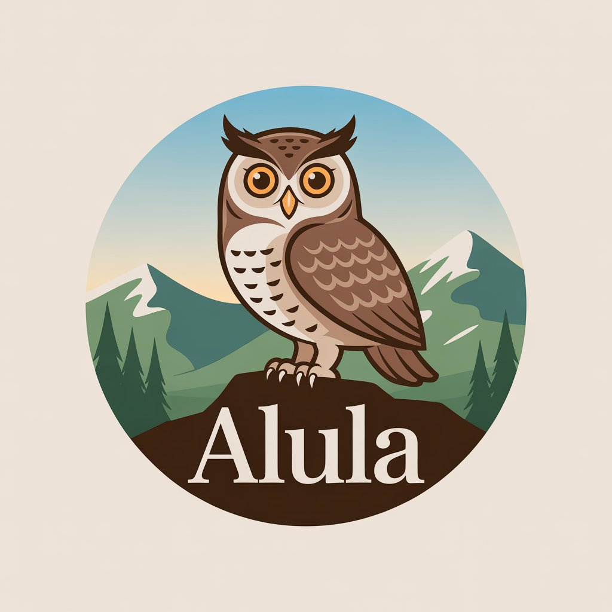

Nuestra Historia
Alula nació en abril de 2025 como un proyecto académico desarrollado por: Rubén Hernández, Manuel Castro, Lexiles Rivas, Abner Ortega, Eduardo Malave y José Gil, estudiantes de la Universidad Nacional Experimental Rómulo Gallegos, en el área de Ingeniería en Sistemas.
Desde su concepción, Alula se enfocó en la promoción del turismo local, tomando como referencia el Estado Guárico, Venezuela, una región con un vasto potencial turístico pero con visibilidad limitada en el sector. Inspirados en la evolución del turismo y en el impacto de la era digital, los estudiantes estructuraron la empresa como una plataforma tecnológica, buscando conectar viajero con destinos auténticos y fortalecer las comunidades locales.
